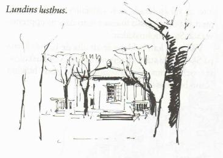
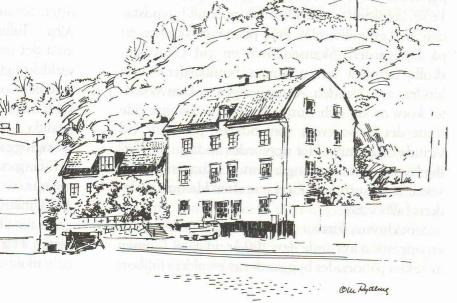
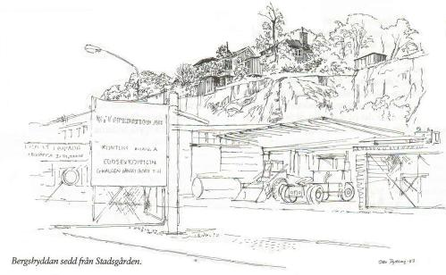
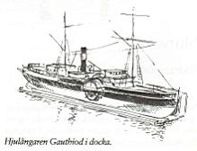
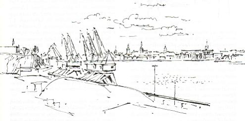

Södermalm i tid och rum. Stockholm
Ur Se på Söder, Ollle Rydberg, 1986 Skansen på Söder
Stockholms försvar råkade på 1800-talet ut för en operation liknande den 200 år tidigare. I mitten av seklet påbörjades byggandet av ett aldrig fullbordat värn vid Johanneshov, som ingick i en tänkt försvarslinje från Liljeholmen i väster till Nacka i öster. Senare dök tanken upp att förse sträckan Alby - Tullinge och vidare österut med värn, men även det projektet rann ut i sanden. Under första världskriget insprängdes dock i bergen längs Lissmadalen och mot Drevviken på några ställen kassematter, vilka kan ses som välvda murverk infällda i terrängen och försedda med fyrkantiga skottgluggar.
|
 |
Fåfängan fick snart civil status. Bland ägarna noterar vi grosshandlaren Fredrik Lundin, som 1773 inköpte
området. Det är honom vi har att tacka för tillkomsten av det lilla lusthuset uppe på platån. Här kunde han
förlusta sig med sina vänner och njuta av det sköna sceneriet över inloppet.
Efter en del olämpliga ekonomiska transaktioner smet han i väg till Norge för att komma undan lagens arm. En senare ägare, grosshandlaren Daniel Asplund, var den som vid 1700-talets slut lät bygga malmgården vid bergets fot. År 1839 blir det åter en grosshandlare på Fåfängan, när skotten James Paton träder till som innehavare. Att grosshandlare hade särskild dragning till Fåfängan hade samband med den trävaruhandel som sedan 1700-talet bedrevs vid stranden. |
|
Under den ljuva försommartiden, när grönskan är ljus, himlen ullig av vita cumulusmoln och Saltsjön livas av
seglande eller motorsurrande fritidsbåtar, verkar Bergshyddan inte oäven som boplats. Då får man förstås
bortse från husets skröplighet, som döljs under otuktade sjok av lönn-, asp-, ask-, rönn-, lind- och syrenblad ...
I höstrusk och mörker blir intrycket annorlunda. Stieg Trenter har i novellen "Kråkslottet på Fåfängan" givit sin syn på stället. "Det var ett underligt hus. Så här i mörkret verkade det vanskapt och oformligt. Det var byggt i vinkel, taket var högt och spetsigt och i alla hörn och kanter anade man sig till utbyggnader och prång: Sedd från Stadsgården ger husets belägenhet |
 |
Bergshyddan var ett uppskattat sommarnöje på 1800-talet. "När gräset var grönt" heter en bok av journalisten Annastina Alkman, där hon kärleksfullt beskriver ungdomsminnen från Fåfängan. Författarinnan var maka till chefredaktören för Göteborgs-Posten Edvard Alkman. Båda var tidigare knutna till Dagens Nyheter. Parets dotter Eva von Zweigbergk blev också skribent och medarbetare i Dagens Nyheter under fyrtio år som kulturjournalist.
|
 |
Annastina Alkman var dotter till sjökaptenen Albert Rydell, anställd i Sveabolaget. Rydells hyrde i slutet av 1800-talet Bergshyddan av grosshandlare Funch. För sjökaptenen låg platsen mycket lägligt intill Södra varvet, eftersom Rydell hade i uppdrag att för sitt rederi övervaka arbetet med hjulångaren Gauthiod. Den skulle byggas om till propellerdrift. Han förälskade sig i det lilla nästet på Fåfängans berg och återkom sommar efter sommar under hela 1890-talet med hustrun och deras två döttrar. Bekvämligheten var det lite si och så med. Dricksvatten hämtades från Danvikens hospitals pump. Bestyret sköttes dock av en anställd vid inrättningen. Han fick några ören per gång för besväret. |
Bergshyddan hade innerstaden inpå knutarna. Från Tegelviken gick en färja till Slussen och därifrån kunde man med hästspårvagn nå slutmålet. Var det ingen brådska så gick det lika bra att gå hela vägen. Beträffande hjulångaren Gauthiod var den gammal redan på Rydells tid. På det tidiga 1840-talet trafikerade den rutten Stockholm - Ystad. Fartyget skulle länge tjäna rederiet Svea också efter ombyggnaden. Den som till exempel år 1920 skulle till Reval och Tallinn hade att anförtro sig till Gauthiod och dess kapten. Varje torsdag klockan tolv lättade fartyget ankar från Skeppsbron och stävade ut mot Saltsjön och destinationsorten.
|
Det stolta Sveabolaget, som från starten 1871 utvecklades till en kustfrakternas stormakt, omfattade över
90 fartyg när det var som störst. Strukturomvandlingen efter andra världskriget tog musten ur företagets flotta.
De moderna färjlederna till Finland ställde Sveabolaget utanför. Privatbilism och billiga bussresor tog kål på
kustfarten. De baltiska staternas inlemmande i Sovjetunionen skar av resandeströmmen mellan Stockholm - Tallinn - Ystad. År 1981 försvann rederidelen och bolaget omorganiserades till fastighetsbolag. Fåfängan ligger lite avigt till, även för söderbor. Det är inte så lätt att hitta hit upp. Med klasskamraten och blivande poeten Lars Fredin traskade jag i Fåfängans backar några |
 |
|
 |
Utsikten är härlig, men hade varit mer spännande om det gamla varvet i Tegelviken funnits kvar. Det måste ha varit en
levande och intressant bild att registrera med alla sinnen. Vi har Finnboda varv som jämförelse.
Frånsett Vikinglinjens flytande höghus till lyxfärja ger den i övrigt tomma Stadsgårdskajen en pinsam
påminnelse om innerstadens reducerade sjöfart. Annat var det på den tiden då Sveabolagets Gauthiod låg här på
W Lindbergs verkstads- och varvsaktiebolag. Museilektor Göran Sjöberg på stadsmuseet, som vet mycket om fartyg, berättar att Gauthiod
nu ligger som vrak vid Fjäderholmarna.
|
Fåfängan övergick på 1920-talet i stadens ägo och dess rivningsglada planerare ville rasera det lilla trevliga lusthuset. År 1938 fick man emellertid en ny ledning inom parkförvaltningen, med en klarare inriktning på att försöka bevara kulturhistoriskt intressanta miljöer. Därmed räddades lusthuset och de 62 fyrkantsklippta lindarna.